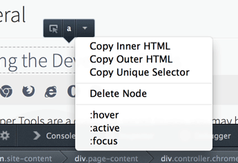
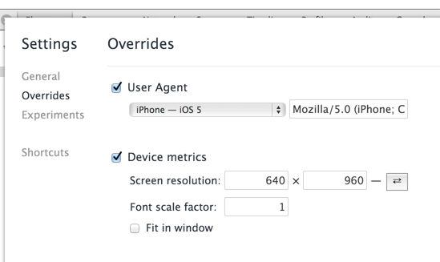
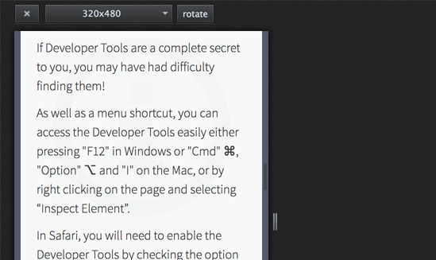

What do you use?
The Current State of
Browser Development Tools
(in my personal opinion)
- Chrome Developer Tools have the best feature set
- Firebug has fallen far behind
- Firefox Developer Tools are catching Firebug up
- Safari Developer Tools are a total mess
- Internet Explorer Developer Tools have stagnated (IE10 ~= IE9 DevTools)
- Opera 15 Dragonfly == Chrome Dev Tools
Using the Browser Development Tools
In Your Workflow
- We have to support all these browsers
- We need good tools in each!
- We need to know the benefits and limits of our tools.
My development method:
Build in Chrome, test in others
Use the Latest Developer Versions
- Fullest features in latest versions
- 12 week release cycles = incremental changes
Developer versions:
- Chrome - Canary
- Firefox - Aurora
- Safari - Webkit Nightly
- Internet Explorer - Platform Preview
- Opera - Opera Next
Previously...
Now...
Getting the most out of your
Browser Developer Tools
20 "secrets" to make development faster.
Console
1. console.assert()
Evaluate an expression and return a message to the console.
console.assert(false, 'Not true');
Output: 'Not true'
console.assert(true, 'Not true');
Output: -
If your expression is FALSE, the message will be displayed.
2. Reference Current and Previous Elements
From the Console
$0 // current element selected $1 // previous element selected (Chrome, Firebug, Opera, Opera Next, Safari) $2, $3, $4 // history of previous elements selected (Chrome, Opera Next, Safari) $n(0) ... $n(5) // history of previous elements (Firebug)
List for demoing:
- icanhascheezburger
- Hamster Dance
- Charlie Sheen
3. Last Evaluated Expression
Need the result of the previous expression for your next console evaluation?
$_
4. Active, Hover, Focus, Visited
-
Chrome

-
Firebug

-
Firefox
 -
Opera

-
Safari

:before and :after are already in the Styles view... at the bottom!
5. Drag and Drop Elements in the DOM
Select the element in the DOM view, and then drag and drop!
6. Inspecting Typography
7. Viewing Your Site As Responsive
-
Chrome
 -
Firefox

8. Pretty Print
- Chrome - {} at bottom left of the scripts panel.
- Internet Explorer - Tool icon - > "Format JavaScript"
- Opera - automatically prettifies minified JavaScript. :-)
- Safari - {} at the top right of the script panel.
9. Snippets
- In "Sources" Tab, on left.
- Store code you want to run from the Developer Console multiple times.
10. SASS Source Maps
10. SASS Source Maps
Using SASS Source Maps:
- Requires SASS 3.3.
Usegem listto check what version you are running - Add
--sourcemapto your SASS watch command.
sass --watch scss/style.scss:css/style.min.css --style compressed --sourcemap - Add a sourceMappingURL with the name for a map file to the bottom of your SASS file.
/*@ sourceMappingURL=devtoolsecrets.css.map */ - Next, enable the "Developer Tools Experiments" tab in chrome://flags
- In "Settings" activate "Enable Source Maps" and "Support for SASS".
- Restart browser
11. JavaScript Source Maps
Using JavaScript Source Maps:
- Google Closure Compiler builds .map files for you.
Download Closure Compiler - Run Closure Compiler with Source Map Properties.
java -jar compiler.jar --js common.js --create_source_map ./common.js.map --source_map_format=V3 --js_output_file common.min.js - Add a sourceMappingURL with the name for a map file to the bottom of your JS minified file.
//@ sourceMappingURL=common.js.map - In "Settings" activate "Enable Source Maps".
- Restart browser
12. Conditional Breakpoints
Set a breakpoint for when you need it in a loop, not everytime.
Create a breakpoint and right click to add a condition.
Will fire only when the condition is TRUE.
Except, in Firefox, where you must right click the source code and select "Conditional Breakpoint".
13. Debugging XmlHttpRequests
- Reload XHR requests by right clicking and selecting "Reload".
- Add a XHR Breakpoint to pause the code when a particular URL is matched.
14. Debugging Canvas Applications
15. The Network Timeline
- List of resources loaded
- Shows time taken to be requested, latency, time to load
- Shows filesize before and after unpacking
- Sort on any parameter
16. DOMLoaded vs DOMReady
DOMContentLoaded - parsing finished
The load event fired - initial resources downloaded

17. Exporting the Network Timeline
"AJAX isn't loading."
"The page is rendering incorrecting."
"There's an image missing."
Attach the Network timeline (HAR) to the bug report.
Developers run HAR in chromeHAR.
18. Inspecting Page Performance
Timeline - Frames Mode
- Record front end performance
- Look for frames that exceed 60fps (desktop) / 30fps (mobile)
- Use 'h' to hide elements and retest.
19. View Paint Areas
- Visualise how much of the page is being repainted
- Want to keep paint areas as small as possible
20. Exporting Timeline Data
- Right click to save timeline data.
- Attach to a bug report.
- A developer can load it in to their Dev Tools to inspect performance issues.
Thanks!
More secrets at http://devtoolsecrets.com